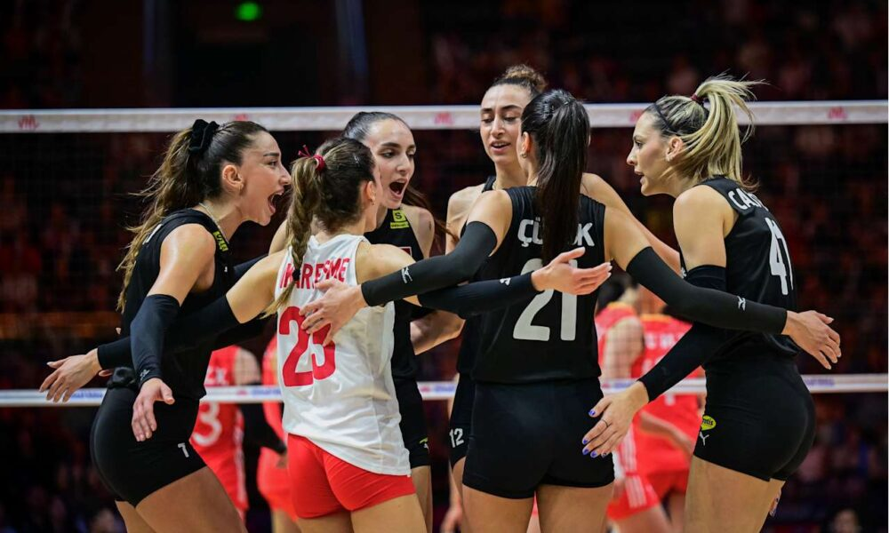

Filenin Sultanları'ndan Esi̇nlenme: **Voleybol Ligi Finalinde Müthiş Çekişme**
Yayınlanma Tarihi: 28 Kasım 2025
Sultanlar Ligi'nde sezonun en büyük mücadelesi sona yaklaşıyor. Final serisinin dördüncü maçında, iki ezeli rakip bir kez daha karşı karşıya geldi ve seyircilere unutulmaz bir maç izlettirdi. Uzun ralliler, kritik bloklar ve smaçlar, voleybolun ne kadar heyecanlı bir spor olduğunu bir kez daha kanıtladı.
Ev sahibi takım, 2-0 geriye düştüğü seride durumu 2-2'ye getirerek finali son maça taşıma başarısını gösterdi. Takımın kaptanı, maç sonrası yaptığı açıklamada, "Taraftarımızın desteği inanılmazdı. Pes etmedik ve sahada karakterimizi gösterdik. Şimdi tüm odağımız son maçta, kupayı müzemize götürmek istiyoruz," dedi.
🏆 Şampiyonluk Tek Maça Kaldı
Final serisinde durumun 2-2'ye gelmesiyle, şampiyonluk unvanı artık tek bir maça bağlandı. Serinin son maçı önümüzdeki hafta sonu tarafsız sahada oynanacak ve tüm biletler şimdiden tükendi. Voleybol otoriteleri, bu sezonki final serisini lig tarihinin en çekişmeli finallerinden biri olarak nitelendiriyor.
Her iki takımın da yıldız oyuncuları formunun zirvesindeyken, son maçta hangi takımın daha az hata yapacağı şampiyonu belirleyecek temel faktör olacak.